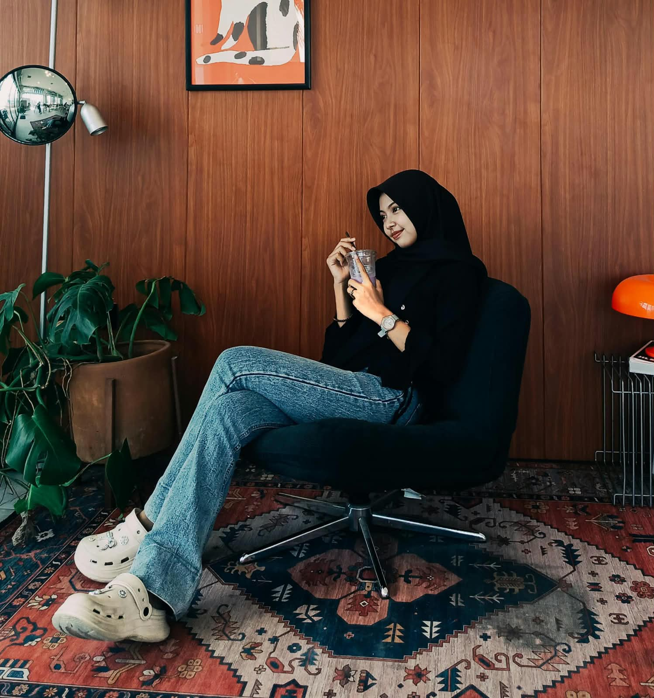

Noera Khairiyati Zulkarnaen
Mahasiswa Informatika
- Nama: Noera Khairiyati Zulkarnaen
- GitHub: noerakhrytzlkrn
- Kota: Pamekasan

Motivasi
Kenapa saya belajar teknologi?
Saya belajar teknologi karena ingin terus berkembang, mengikuti perkembangan zaman, dan memiliki kemampuan yang bisa bermanfaat di masa depan. Saya ingin mengubah rasa ingin tahu menjadi keterampilan yang dapat membantu diri sendiri dan orang lain.
Skills
Kemampuan yang sedang saya latih
Sedang belajar: pemrograman berbasis platform.
Projects
My Profile
Repository tugas P1 Pemrograman Berbasis Platform. Isinya biodata dan portfolio sederhana yang dibuat dengan HTML dan CSS.
Buka repositoryCommit Proof
$ git log --oneline -5
Bukti proses pengerjaan repository bisa dilihat di halaman Commits GitHub. Bagian ini akan diperbarui setelah repository punya minimal tiga commit.
Education
| Tahun | Institusi | Program / Jurusan |
|---|---|---|
| 2024 - Sekarang | Universitas Madura | Informatika |
| 2021 - 2024 | SMA Negeri 2 Pamekasan | IPS |
| 2018 - 2021 | SMP Negeri 8 Pamekasan | - |
| 2012 - 2018 | SD Negeri Panglegur 2 | - |
Personal Identity
- Nama lengkap
- Noera Khairiyati Zulkarnaen
- Nama panggilan
- Noera
- NIM
- 2101020002
- Program studi
- Informatika
- Domisili
- Pamekasan
- noerakhairiyatizulkarnaen@gmail.com
Video P1
Video verifikasi
Video ini menunjukkan proses verifikasi akun, repository, environment, perangkat, dan HTTP sesuai ketentuan P1.
My Theme
Tema Anime
Halaman ini memakai tema anime: layout ala panel manga, gelembung dialog, kelopak sakura, dan warna biru muda seperti langit cerah. Setiap bagian saya tulis sebagai satu episode.